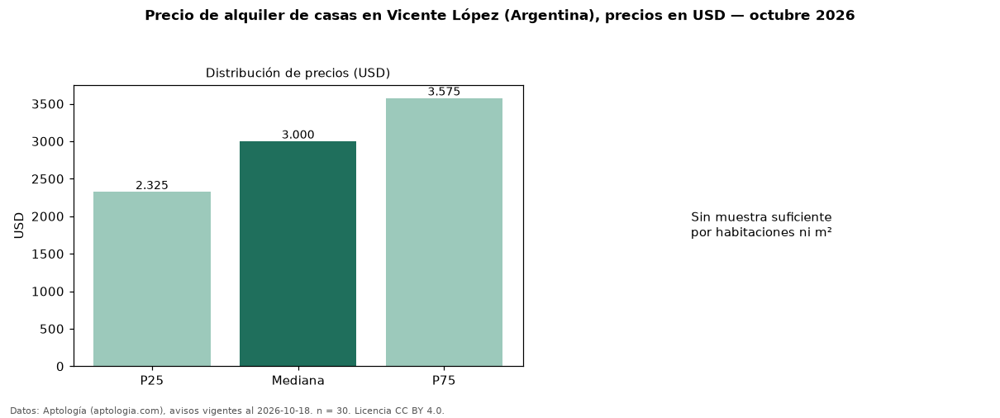

Precio de alquiler de casas en Vicente López (Argentina), precios en USD — octubre 2026
En Vicente López (Argentina), la mediana de canon mensual de casas es USD 3.000, según 30 avisos vigentes. Por precio mediano es la ciudad 5 de 5 de Argentina con al menos 30 avisos de casas en alquiler (USD). La mediana de toda la vivienda en alquiler de Vicente López (USD) es USD 2.300; las casas quedan +30 %. El segmento con más oferta es el de 3 o más habitaciones (30 avisos, mediana USD 3.000). La mitad central de los avisos va de USD 2.325 a USD 3.575 (razón 1,5), una dispersión moderada. Datos: Aptología (aptologia.com), CC BY 4.0 — https://www.aptologia.com/ar/alquiler/vicente-lopez. Archivos: PDF, CSV con las cifras y gráfica PNG.

| Avisos únicos | 30 |
|---|---|
| Percentil 25 | COP 2.325 |
| Mediana | COP 3.000 |
| Percentil 75 | COP 3.575 |
Fuente: avisos vigentes de portales inmobiliarios recopilados por Aptología, deduplicados (mínimo 30 avisos únicos por celda). Precios pedidos, no cerrados. Fecha: 2026-10-18.